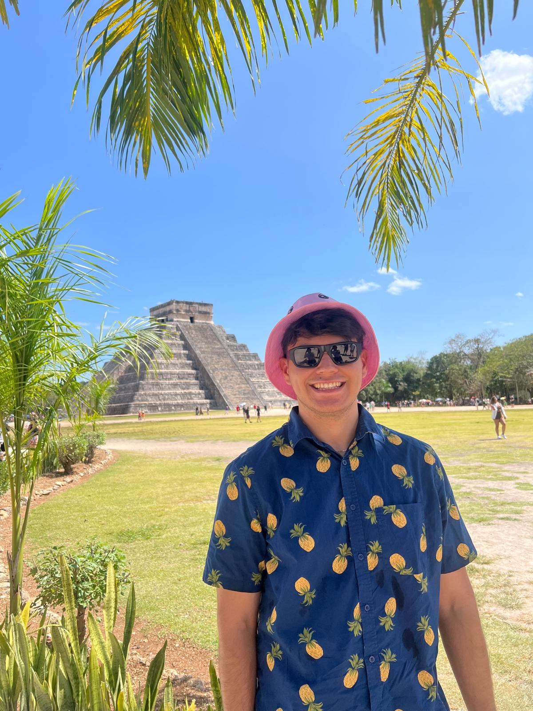

Gael Nolasco's Curriculum Vitae

Resumen
Este CV es creado con el proposito de utilizar los conocimientos aprendidos
en un curso que pagué en Udemy acerca de Desarrollo Web. En este proyecto podran
visualizar mi CV pero a modo de página web para poder comprender mis habilidades
aprendidas, conocimientos y que me conozcan un poco más de igual manera. Espero sea
de su agrado.
Educación:
Hoy en dia soy estudiante de Ingenieria en Sistemas Compuraciones del
Instituto Tecnologico de Tijuana Unidad Tomas Aquino (ITT).
- Educacion Basica: Primaria Jose Vasconcelos I, Jose Vasconcelos II, Colegio
Nuevo Continente.
- Educacion Basica: Escuela Secundaria Estatal General No 101.
- Educacion Media-Superior: Preparatoria Centro de Estudios Tecnologicos industriales y de servicios
No. 58 (CETis 58) donde me gradué como técnico en electrónica.
-
Educacion Superior: Ingeniera en Sistemas Computacionales en el Instituto Tecnologico de Tijuana
Unidad Tomas Aquino en 4to semestre (ITT).
Experiencia de Trabajo:
Actualmente no tengo experiencia previa, pero tengo muchas ganas de aprender y de poder tomar mi primera experiencia laboral
ya sea como practicante o ingeniero ya titulado.
Habilidades Blandas:
- Proactivo
- Responsable
- Aprendizaje Rapido
- Perseverante
- Organizacion
- Trabajo en Equipo
- Disciplinado
Habilidades Tecnicas:
- Programacion:
- Conocimiento Basico en C++, Ladder, Python, .NET, CSS y HTML
- Conocimiento Medio en C#, BASIC y Arduino IDE
- Electrónica y Hardware:
- Programacion en Arduino, Raspberry Pi, Microcontroladores, fabricacion de PCB's, Soldadura
- Conocimientos en diseño de circuitos electrónicos.
-
Sistemas Operativos:
- Mantenimiento de Computadoras
- Instalacion de SSD's
- Cambios de Baterias a Equipos
- Formateo de Equipos
Contactame
Acerca de Mi